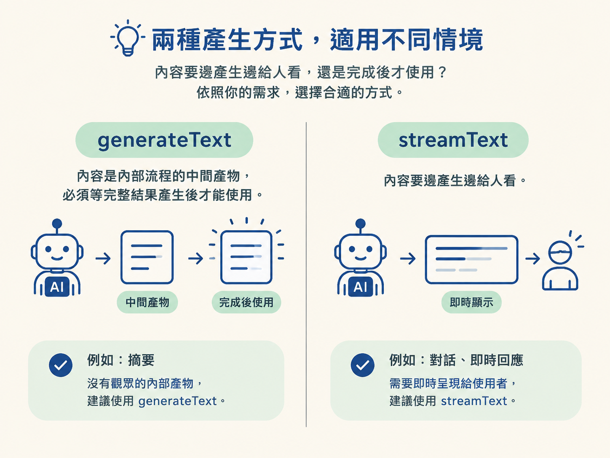
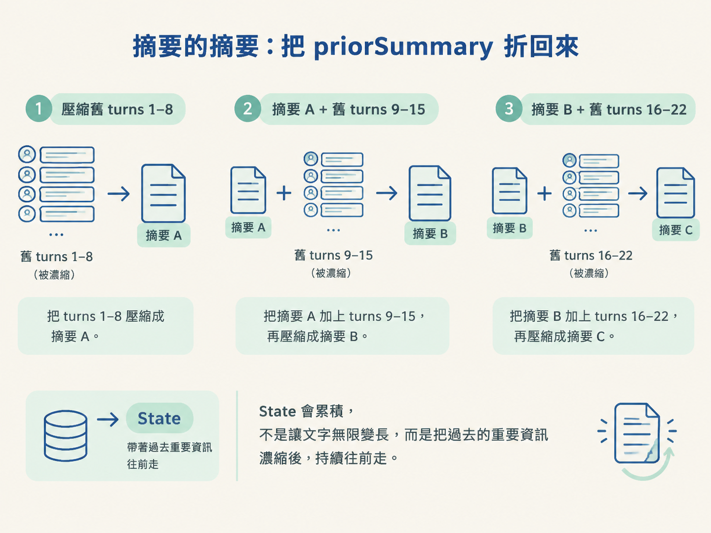

對話一長，所有舊 turns 都塞進 context，不只會變慢，也會讓真正重要的資訊被淹沒。這一步要做的事很單純：把快要移除的舊內容整理成摘要，並把摘要一路帶到下一次壓縮，讓 agent 記得必要的事，卻不用背著完整歷史前進。
用 generateText 寫出 summarize：把舊 turns 攤平成文字、折入既有摘要（summaries of summaries），保留 ID、類別、金額與已送出的事項，最後用 maxOutputTokens 設定摘要上限。
聽到「把對話壓縮成摘要」，很容易以為要先挑關鍵字、計算權重，再刪掉不重要的句子。但這裡不需要另外設計一套摘要演算法。
summarize 的核心就是一次普通的 LLM 呼叫。輸入是「即將被移除的舊內容，加上既有摘要」，再透過專用的 system prompt，要求模型產生更新後的精簡版本。
之後如果要換便宜一點的模型、加上更嚴格的格式要求，或改成串流處理，都是在調整這一次呼叫。摘要本身不需要被包裝成另一種神祕機制。
import { generateText } from "ai";
export async function summarize(
oldTurns: ModelMessage[],
priorSummary: string,
): Promise<string> {
const history = oldTurns
.map((m) => `${m.role}: ${typeof m.content === "string" ? m.content : JSON.stringify(m.content)}`)
.join("\n")
.slice(0, 8000);
const { text } = await generateText({
model,
system: SUMMARIZER_PROMPT,
prompt: [
priorSummary ? `So far:\n${priorSummary}\n` : "",
`Work log to compress:\n${history}`,
"Write the updated running summary.",
].join("\n"),
});
return text;
}這裡選 generateText，而不是 streamText，是因為摘要不需要即時顯示給使用者。它是內部流程的中間產物，後續步驟必須等摘要完整產生後才能繼續。
串流適合「一邊產生、一邊讓人看」的內容。摘要沒有觀眾，使用串流反而要多處理一層：收集碎片，再把它們拼回完整文字。
判斷準則很簡單：內容要邊產生邊給人看，就用streamText；內容是內部流程的中間產物，完成後才會被使用，就用generateText。

程式裡的 system: SUMMARIZER_PROMPT 很重要。摘要器使用的指示，應該和執行任務的 agent 分開。
任務 agent 的 prompt 可能是在說「你是客服，請處理退款」；摘要器的 prompt 則是在說「你是壓縮器，只留下事實，並保持精簡」。如果共用同一份指示，摘要器可能誤以為自己也要執行退款，而不是整理發生過的事情。
摘要 prompt 至少要要求模型產生精簡的 running summary，並明確保留具體事實：ID、類別、金額，以及哪些事情已經送出。
這些資訊最容易在壓縮時被省略，卻又不能遺失。尤其是「已送出的項目」；摘要若沒有記住它，agent 下一次就可能把同一個動作再做一次。
真正讓摘要能持續運作的關鍵，是參數 priorSummary。每次壓縮都不是從零開始，而是把上一份摘要和新一批舊 turns 一起交給模型，產出更新後的版本。
這就是 summaries of summaries，也就是「摘要的摘要」。第一次可能把 20 個 turns 壓成 5 行；下一次再把那 5 行和新的舊 turns 一起壓縮成 6 行。被移出 turns 的歷史，不會直接消失，而是以濃縮後的形式留在摘要鏈上。
| 時間點 | 輸入 | 輸出（State） |
|---|---|---|
| 第一次壓縮 | 舊 turns 1–8 | 摘要 A |
| 第二次壓縮 | 摘要 A + 舊 turns 9–15 | 摘要 B（A 的更新版） |
| 第三次壓縮 | 摘要 B + 舊 turns 16–22 | 摘要 C（B 的更新版） |
所以「State 會累積」不是指文字會無限變長，而是指它會帶著過去的重要資訊往前走。每次壓縮都吸收新內容，再吐出一份更精簡的版本。

這裡也要遵守 messages 的基本規矩：輸入最後必須告訴模型要做什麼。
程式最後放入 "Write the updated running summary."，就是為了明確要求模型產生更新後的摘要。如果只有 priorSummary 和 history，模型看到的只是一份資料報告，不一定知道下一步要輸出摘要。
只在 prompt 裡寫「請保持精簡」，比較像是在拜託模型，不能當成可靠的長度控制。摘要本身會被放回後續 context；如果摘要也越寫越長，壓縮就失去意義。
真正的上限要交給 inference 參數 maxOutputTokens：
const { text } = await generateText({
model,
system: SUMMARIZER_PROMPT,
prompt,
maxOutputTokens: 300, // 硬性上限，不靠 prompt 求情
});這個設定會硬性限制模型產出的摘要長度。當你發現壓縮後 context 仍然很肥，除了檢查舊 turns 是否真的移除，也要檢查摘要本身是否有設上限。
這一步有兩個可以直接帶走的決策。
第一，摘要是一次獨立的 LLM 呼叫，並且有自己的 prompt。因此你可以單獨調整摘要的模型、成本與品質，而不必改動任務 agent。
第二，摘要要把上一份摘要折回輸入。這讓壓縮變成持續更新，而不是每次重寫一段互不相干的文字，也避免歷史資訊在 turns 被移除後突然斷掉。